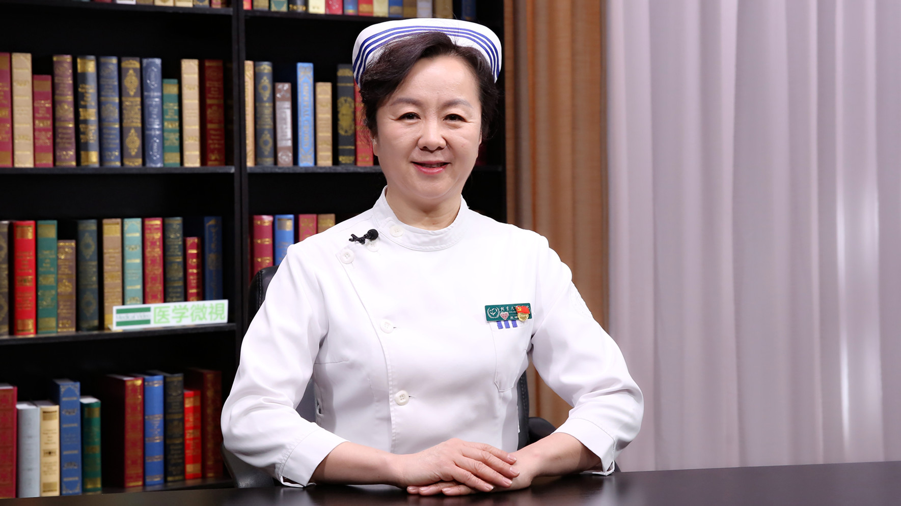

2.6 肠梗阻患儿的护理¶
张琳琪 主任护师¶

国家儿童医学中心 首都医科大学附属北京儿童医院护理部主任 主任护师；
首都医科大学临床护理学院儿童学系主任；首都医科大学临床护理学院院务委员会常务委员 ；中华护理学会理事 科普工作委员会副主任委员；中华护理学会儿科专业委员会副主任委员 ；中华医学会儿科分会护理学组副组长；北京护理学会副秘书长 ；北京护理学会儿科专业委员会主任委员。
主要成就： 《材料管理》专刊副主编；《中华护理杂志》《中华现代护理杂志》《护理管理杂志》《中国护理管理》《护理研究》《护理学报》编委；国家临床重点专科（儿科护理）项目负责人；近5年主编或参编专业书籍10余部。
专业特长： 自1985年在北京儿童医院工作以来，一直从事儿科临床护理、护理管理工作，擅长护理岗位垂直管理，并取得很好成效。
孩子出现“腹痛、腹胀、呕吐、停止排便和排气”，警惕小儿肠梗阻！¶
孩子出现“腹痛、腹胀、呕吐、停止排便和排气”，警惕小儿肠梗阻！
（采访）什么是小儿肠梗阻？
小儿肠梗阻是小儿腹部的急症，比较常见的一种疾病。
肠梗阻主要是肠内外的病变，以及胃肠蠕动功能的障碍，导致的肠内容物通过障碍。
肠梗阻主要的表现，第一是腹痛，因为梗阻了以后，食物不能过去，会呕吐。
第二是呕吐，表现的就是反射性的呕吐，主要是呕吐的一些胃液、十二指肠液，以及胆汁，甚至还会有一些粪便样的液体。呕吐频繁的时候，孩子也会出现脱水。
第三，腹胀，因为食物和气体都过不去，所以孩子会腹胀。
第四，主要就是停止了排便和排气，腹部会有肠型，因为它过不去，堆积在那里面，会有一个肠子的形状。
而且肠鸣音会从亢进到逐渐减弱，甚至消失。这就是主要的几个表现。
（采访）有没有说小儿肠梗阻，哪个年龄段比较常见？
小儿肠梗阻，哪个年龄段都可能有发生的。
（采访）小儿肠梗阻常见吗？
肠梗阻是小儿腹部外科急症最常见的疾病之一。
这也是有很多原因，因人而异，有一些个体的因素。
如果是肠内的病变，跟他饮食、排便习惯有关。
有一些肠道的疾病，还有一些更常见的是肠道手术以后，容易发生肠梗阻。
（采访）当小儿发生肠梗阻之后，还会排气吗？
绝大多数的肠梗阻患儿是不能够排气的，其中有一个症状就是停止排气。
但是肠梗阻也分完全肠梗阻和不完全肠梗阻，不完全的肠梗阻，有一些排气。
一旦有这种梗阻的表现，家长就不要再盲目的给孩子喂吃的了，要先禁食，缓解他的梗阻症状。
采取一些体位的改变，比如说半坐卧位，让孩子减轻他的疼痛。
观察一下孩子的症状有没有加重，如果说腹痛、腹胀、呕吐的症状加重了，就要及时到医院就医。
什么是胃肠减压？肠梗阻患儿都要做胃肠减压吗？¶
什么是胃肠减压？肠梗阻患儿都要做胃肠减压吗？
（采访）是不是所有的小儿出现肠梗阻之后，都要进行胃肠减压？
胃肠减压是通过鼻腔下一个胃管到胃里面，外面接着减压器，一定要在医院做。
严重肠梗阻的孩子到了医院以后，都要做胃肠减压，因为他会在胃和肠道里，积存了很多食物和气体。
通过胃肠减压，才能把这些食物和气体给他吸出来，这样能够减轻他的腹痛和腹胀。
（采访）对于严重的肠梗阻患儿，才进行胃肠减压，怎么判断他是严重的，还是比较轻的？
肠梗阻有完全性和不完全性的。
不完全性的能够缓解，所以在家里可以观察，他还可以排气。腹胀，如果慢慢的减轻了，也不吐了，可能就缓解了，就可以不来医院了。
基本上到医院的都是缓解不了的，所以到医院，要给他行胃肠减压，这样才能够减缓他的腹胀，也为下一步进一步手术做准备。
（采访）对于不完全肠梗阻，在家里可以自行缓解，有没有说今天缓解完了，第二天他又出现了？
有可能，所以就要观察，如果他又有症状，就要来医院就医了。
（采访）一般要观察多久？
这不是说观察多久，只要孩子有症状，你就来医院。
如果他没有症状了，跟正常孩子一样了，正常生活就没有问题。
做胃肠减压的肠梗阻患儿插胃管后需要注意哪些事？还能吃饭、喝水吗？¶
做胃肠减压的肠梗阻患儿插胃管后需要注意哪些事？还能吃饭、喝水？
（采访）对于需要进行胃肠减压的患儿，该如何护理他们？
胃肠减压是通过鼻腔下一个胃管，所以说小孩子会不舒服。不像成人，不舒服，但是知道是在给我治病，我会保护好它。
小孩子可能没有意识，他难受的时候可能就要去拔，所以在护理的时候，不管是家长，还是医务人员，跟孩子讲，但是很多小孩子是不懂的，所以要看护好，不要让他把胃管拔掉。
如果拔掉以后，还得二次再插，孩子还要经历这样的一个痛苦。
还有在吸引过程当中，因为它会吸胃内的这些食物，有的时候食物会堵住胃管的侧壁孔，这些食物就吸不出来。所以医务人员隔两个小时，会用饮用水再洗冲一下胃管，就是为了保证胃管通畅，能够实施有效的胃肠减压。
护理当中也注意这些胃管和引流管不要打折，因为一打折也会堵住，减压就不通畅了。
在护理当中要保证他的体位，保证胃管固定好。
还要观察观察胃液的颜色，它的性质，还有胃液量的多少，这些都能够为医疗的治疗提供一些依据。
（采访）进行胃肠减压需要多长时间？
主要是看孩子的情况，如果是完全的肠梗阻，必须通过手术来解决。所以就一直要减压到手术，手术回来以后，也还有一段时间的胃肠减压。
如果孩子的肚子不太胀，能够排气，就会停了胃管。
（采访）在进行胃肠减压的时候，还能不能喂孩子吃饭、喝水？
肯定就不行了，因为吃进去，就吸出来。要禁食、禁水。
肠梗阻患儿的疼痛有什么特点吗？家长可以给孩子吃止疼药吗？¶
肠梗阻患儿的疼痛有什么特点吗？家长可以给孩子吃止疼药吗？
（采访）腹痛是肠梗阻的一个症状表现，肠梗阻导致的腹痛，有没有一个独有的特点，区别于其他的腹痛？
腹痛也要看它的梗阻性质。
如果就是一个单纯性的肠梗阻，孩子可能就会有阵发性的腹痛，不是说持续的。
如果是持续的这种剧烈腹痛，就是绞窄性的肠梗阻了，就是肠管的血运受影响了。
在腹痛的时候，要提醒家长，孩子肚子疼的时候，不要随意的吃镇痛药，因为会掩盖症状。有可能吃了止痛药以后，感觉不疼了，但是其实梗阻并没有缓解，可能就严重了。
所以建议家长，孩子腹痛的时候要观察，可以通过体位来缓解。比如说半坐位，让他能够缓解一些疼痛。
但是他的梗阻不缓解，还会持续疼痛，就要赶紧带孩子来医院就医。
（采访）只要没有解决肠梗阻，他就会一直有疼痛问题。
对。
肠梗阻患儿休息时坐着好，还是躺着好？术后多久可以下床活动？¶
肠梗阻患儿休息时坐着好，还是躺着好？术后多久可以下床活动？
（采访）对于肠梗阻的患儿，在休息的时候，建议坐着，还是躺着？
这要因人而异，看孩子的情况。
如果孩子病情比较平稳，当然建议是取半坐位。
因为半坐位能够减轻孩子的腹痛，肠梗阻还有腹胀，在半坐位的时候，孩子的膈肌是下降的，也能够减少因为腹胀对呼吸和循环的影响。
但是如果孩子很难受，他的病情也比较重，就要卧位。
但是肠梗阻有一个很严重的症状就是呕吐，如果孩子是平卧、躺着的时候，一定要头偏向一侧。避免胃内容物反流，呕吐出来以后孩子会误吸，一旦误吸了就会引起窒息，或者说会引起吸入性的肺炎。
肠梗阻的孩子手术以后，因为孩子肯定会不舒服，伤口会疼，他不愿意动。但是建议他早期下床活动，能够促进肠蠕动，让他肠功能尽早的恢复。
（采访）一般是建议做完手术之后就立即下床吗？
不，一般都是第2天再下床。
这样的手术都是全麻，回来以后孩子还有一个麻醉恢复期，让孩子能够适应。
6个小时以内先平卧，6小时以后让他半坐位，第2天鼓励他慢慢的下地活动。
肠梗阻患儿出现吸入性肺炎后咳不出痰，该如何护理？¶
肠梗阻患儿出现吸入性肺炎后咳不出痰，该如何护理？
（采访）对于肠梗阻的患儿出现了吸入性肺炎，该如何护理？
一个原因是吸入性造成的，他的肺炎跟其他的感染肺炎也是一样的，那么一旦出现了肺炎，就要采取手段来治疗肺炎。
首先要静脉输注抗生素来治疗炎症。
有炎症的时候，他的呼吸道分泌物增多，有痰，可是小孩子，他可能不像成人一样能够有效的咳嗽、咳痰。这时候会采取雾化稀释他的痰液，给孩子拍背，从下往上这样去拍，让他的痰液能够排出来。
但如果特别小的孩子，不能够进行这样有效的咳嗽，通过拍背、还要吸痰，把痰液吸出来，能够早日的治疗肺炎。
还要给孩子创造比较安静、舒适、温湿度合适的一个环境。
在饮食上也注意，要吃一些清淡、易消化的食物。
还有一些对症的，比如说肺炎的孩子会发烧，要根据他的体温，采取物理或者药物降温，通过这些手段来治疗肺炎。
为什么肠梗阻患儿会出现吸入性肺炎？可以预防吗？¶
为什么肠梗阻患儿会出现吸入性肺炎？可以预防吗？
（采访）肠梗阻和吸入性肺炎，是同时出现的吗？还是有伴随的关系？
其实肺炎不应该跟肠梗阻来联系上，是因为吐了东西以后，让孩子不小心吸进去了，才造成的肺炎。
肠梗阻跟肺炎是没有因果关系，是吸入性的肺炎，有食物吸到气管里边了，它出不来，才引起的肺炎。
（采访）有没有好的办法预防吸入性肺炎的出现？
这就是反复强调，平卧的时候一定要头偏向一侧。
如果仰着，吐出东西，就容易吸进去，头偏向一侧，孩子吐出来以后，能够把食物清理掉，不会吸进去。
建议孩子，能半坐卧位的时候，最好是半坐卧位，如果坐着难受，躺着，也建议右侧卧位。这样能够促进他的胃排空，对吸引也是有效的，食物就不会让孩子从口腔吐出来。
如果是平卧的时候，也是保持头偏向一侧的体位，才能保证孩子不误吸呕吐的东西，这样就能够避免发生窒息和吸入性的肺炎。
（采访）如果孩子真的误吸了这些呕吐物，他的第一反应是怎样的？让家长能够立马就知道误吸了？
在家里他会憋住了，因为堵住呼吸道了，就会有窒息的症状。
也有一些小的呕吐物进去，可能孩子会呛一下，也会发生误吸的可能。
他可能吸的比较少，虽然没有窒息、没有让孩子憋住。但是异物进去了，孩子慢慢就会发烧，有肺炎的表现。
护理手术前的肠梗阻患儿，需要特别做好哪些事？¶
护理手术前的肠梗阻患儿，需要特别做好哪些事？
（采访）对于患儿做肠梗阻手术前，有没有需要特别注意的？
一旦发生这种完全的肠梗阻需要手术，家长也不用紧张和焦虑，到医院以后会给孩子采取一系列的措施。
首先要让孩子禁食、禁水，目的是缓解他的腹胀，减轻他的呕吐。
再有一个，要为手术做准备，所以手术的病人，术前都要禁食，手术禁食的目的也是防止食物逆流。
因为人体的结构在食道和胃之间有一个贲门，贲门平时是能够收缩、能够关闭的，但是如果孩子做手术就要给麻醉。
全麻以后，贲门是关不上了，如果胃内有食物，就会逆流，孩子就会呕吐。
还有一个是正常的人，也会有这种咽喉的反射、呛咳的反射。
比如说呛着东西了，孩子就会咳嗽，但是麻醉的时候就不会了，这些反射都消失了。
所以必须要禁食，禁食、家长有时候可能不理解不给孩子吃东西，为了手术做准备的。
所以来了以后，手术前，首先要禁食、要禁水。
由于禁食、禁水，要保证孩子的正常生理，所以要给他补液，就是要静脉输液。
静脉输液一方面是补液，另外一方面是输一些抗生素，提前预防一下，避免手术后伤口的感染。
还有要做胃肠减压，通过鼻腔插一个胃管进到胃里面，吸引出它的东西来。所以插胃管，小孩子不舒服、会抗拒。
所以第一，希望家长能够理解。第二，也希望家长能够配合我们，让我们顺利的把胃管插下去。
还有一个要为手术做准备，皮肤的准备，要备皮。
要给孩子洗澡，要给孩子把手术区域的皮肤清理干净，这些都是我们术前要做的一些准备。
（采访）我们禁食、禁水，一般多长时间？
常规的手术，不管是腹部手术，还是其他的手术，应该都是6个小时的禁食、禁饮。
这样就不会发生刚才说的这些食物反流、呕吐这些情况。
护理手术后的肠梗阻患儿，需要特别注意什么？¶
护理手术后的肠梗阻患儿，需要特别注意什么？
（采访）对于做完肠梗阻手术的患儿，有没有需要特别注意的？
手术是全麻手术，所以要观察孩子的生命体征，看看孩子是不是麻醉清醒，看看他的精神、面色、呼吸是不是正常。
第二个就是手术回来，如果没有清醒的时候，一定要去枕平卧。
可能家长觉得孩子平着躺着不舒服，但是枕上枕头就危险，呼吸道就容易堵住了，所以我们要去枕平卧。
平卧的时候还是要注意头偏向一侧，刚刚做完手术也还有可能会呕吐。
所以要去枕平卧，等孩子清醒以后，可以让他采取这种半坐位，减轻他的腹胀、腹痛，然后恢复。
第二天就鼓励孩子下床活动，让他能够早期的恢复肠蠕动的功能，早日康复。
在回来的时候，有胃肠减压的时候也是这样。要保持胃肠减压的通畅，要观察引流的性质。
如果引流液也少了，也没有什么引流液了，孩子肠功能恢复了，就可以慢慢进食了。
肠梗阻患儿手术后的哪些表现就说明已经恢复正常了？在饮食上需要特别注意什么？¶
肠梗阻患儿手术后的哪些表现就说明已经恢复正常了？在饮食上需要特别注意什么？
（采访）对于肠梗阻的患儿，术后哪些表现，就说明他恢复正常了？
比如腹部变柔软了，而且也没有肚子疼了，就是腹痛也消失了，也能够排气了，那就证明我们的肠梗阻症状缓解了。
（采访）肠梗阻缓解之后，我们在饮食上有哪些需要特别注意的？
因为肠梗阻的病因，是跟他的饮食习惯，排便习惯都有关系。
所以肠梗阻术后恢复期，一定要注意让孩子禁食生冷的、黏的、硬的这些食物。
尽量吃一些清淡的、易消化的食物，而且要少量多餐，不要一次吃太多、暴饮暴食。同时保持正常的排便。
还有吃完饭以后，别让孩子马上去运动，维持一个正常的肠道功能，这些就能够避免他再次发生肠梗阻！
护理出院后的肠梗阻患儿，需要注意什么？能洗澡吗？¶
护理出院后的肠梗阻患儿，需要注意什么？能洗澡吗？
（采访）对于肠梗阻的患儿出院后，需要注意什么？
毕竟经过了手术，对孩子也是一个打击，也会使他的免疫力下降。所以出院以后的孩子尽量先不要去人多的公共场所，避免交叉感染。
回到家以后是可以上学的，但是要有1个月的免体，就是先不要上体育课，让他的体力恢复以后，再正常的活动。
凡是这种手术后，1周以后都要来医院复查，看看孩子的恢复情况。
回家以后也要多观察孩子的肠道表现，一旦又出现了腹痛、腹胀、呕吐等等这些症状，也提示有一些病变了，就要赶紧带孩子来医院就医。
（采访）回到医院复查的时候，一般检查什么？
复查主要是看孩子的情况，只要他没有腹痛、腹胀的这些表现，看看伤口长的比较好，这就没有问题了。
（采访）回到家对于伤口的护理，该如何进行？
因为一般的孩子，都是在医院期间拆了线以后才回去。
而且是观察伤口没有问题了才回家，拆线以后还给覆盖纱布，1、2天以后没有问题，就可以打开了。
只要观察伤口没有红、肿，就没问题了，也就可以给孩子洗澡，正常的生活都可以。